Sean Francis
"I've Written Your Story"
Document
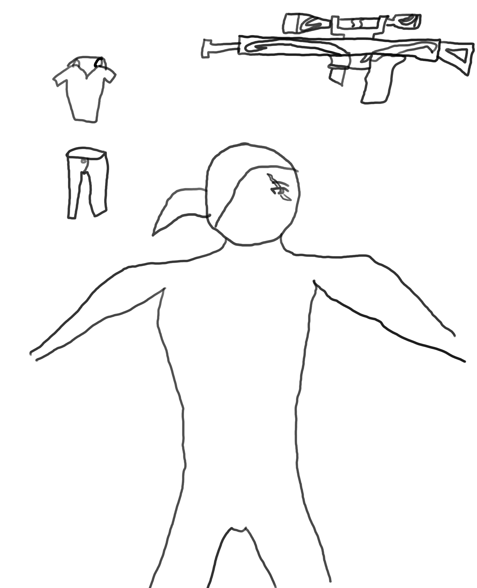
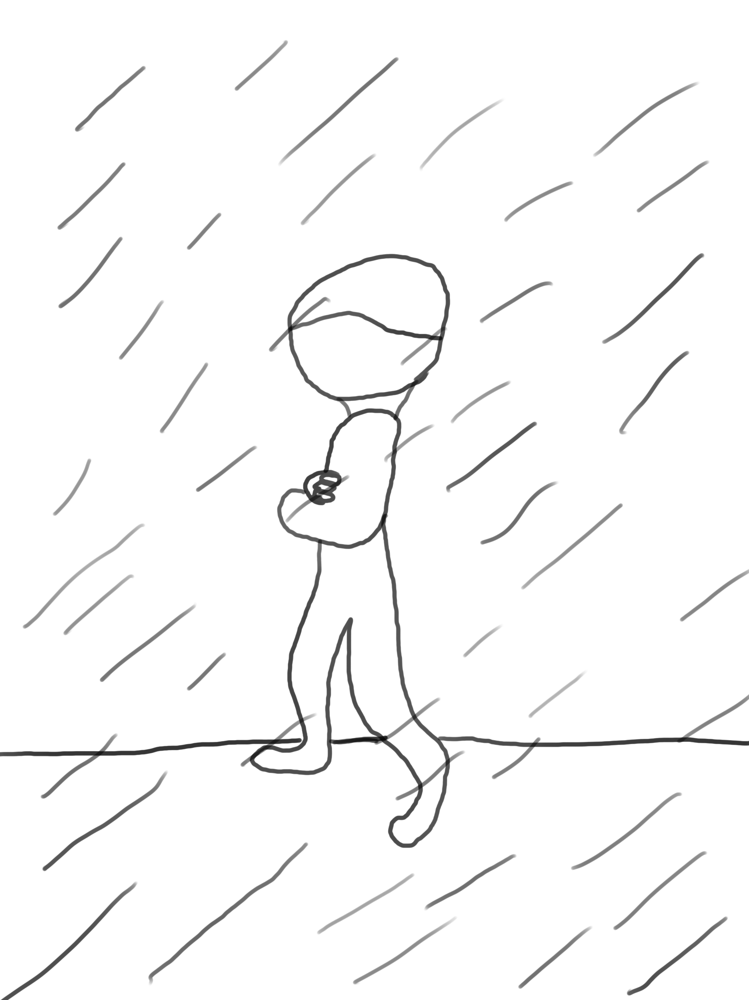
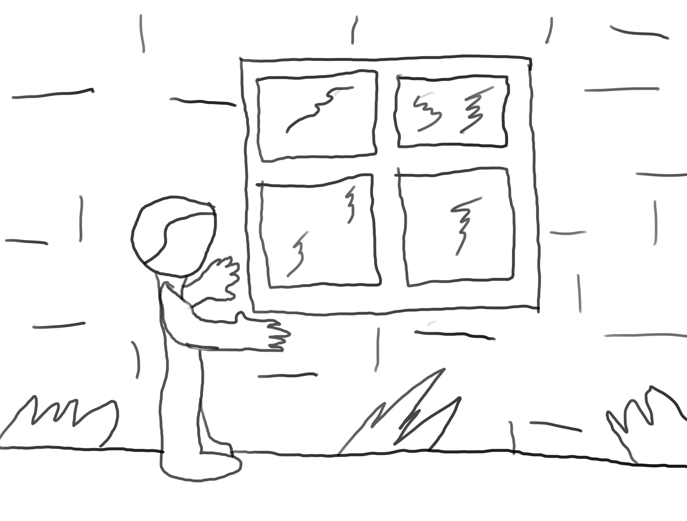
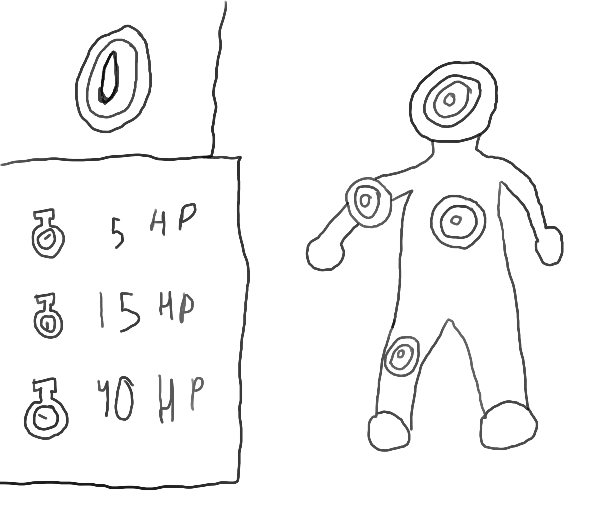
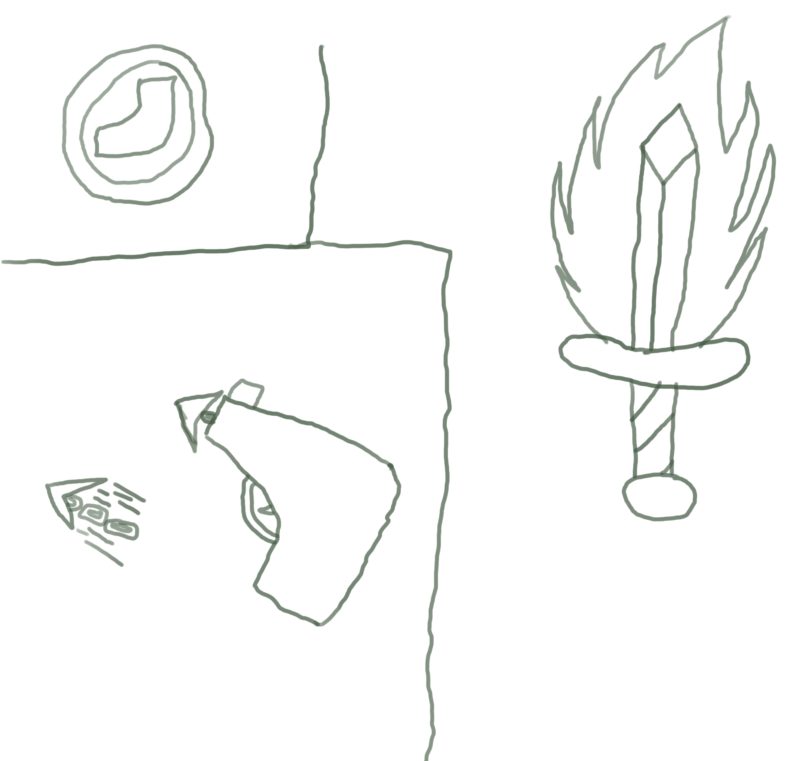
Name: David Parker
Age: 26
Gender: Male
Description: David has dark blonde hair pulled back in a small tail. Blue eyes that seem to always be on alert. A thin face that curves down into a near flat chin and a scar that glides across his forehead and down his right eye. Leanly muscled built more for power than speed. Proportions are average. He always prepares for the weather, but he usually wears business casual with polo shirts and blue jeans.
Personality: He is afraid to let anyone in his life again. In order to do so, he puts on an arrogant personality. Something that would keep people from liking him (He doesn't realize this himself). This has given him a cocky attitude and the idea that he is untouchable. Adding a pure stubborn streak just adds to the madness. Yet, when one finally manages to break through his mask, they can see that he is actually very unsure of himself. His major flaw is that he is absolutely terrified of blood. He does his best not to look at it. Normally, when he is sniping from a distance and keeps himself calm, he is fine.
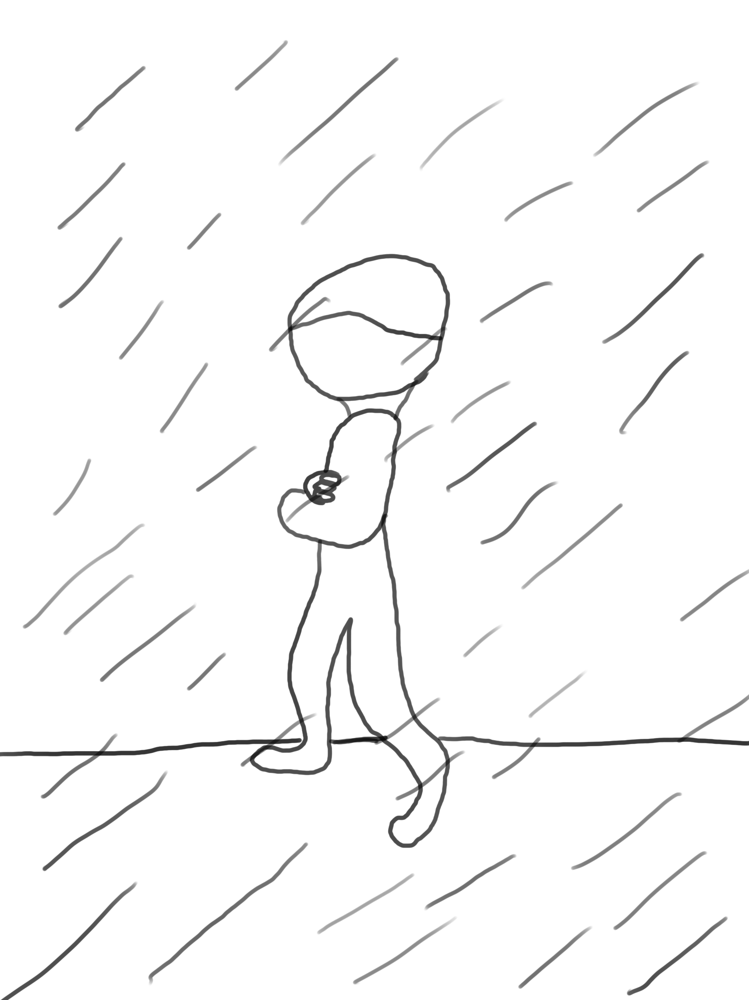
Background: David was born to two parents who hated magi with a burning passion. They were always telling him about the various rumors and horror stories about magi including the August Fires and the Chicago Assault. He grew up with these stories and practically had them memorized. So, when his parents suspected him (falsely) of being a mage at the age of ten, he was thrown out near immediately. They did not even try to take him to the local Mage Treatment Centers in his home of Boise, Idaho to confirm their suspicions.
After two weeks of living on the streets, he was inside a small gas station buying food with the small amounts of money he begged, borrowed and stole when it was attacked by a masked robber. The robber threatened the store with magic and David was frozen with fear. The stories his parents had told him returned to the surface of his mind. But as the cashier was getting the money together for the robber, a blast of force sent the robber through the store's windows. One of the customers was a mage himself, and with relative ease, held the robber down until the police arrived.
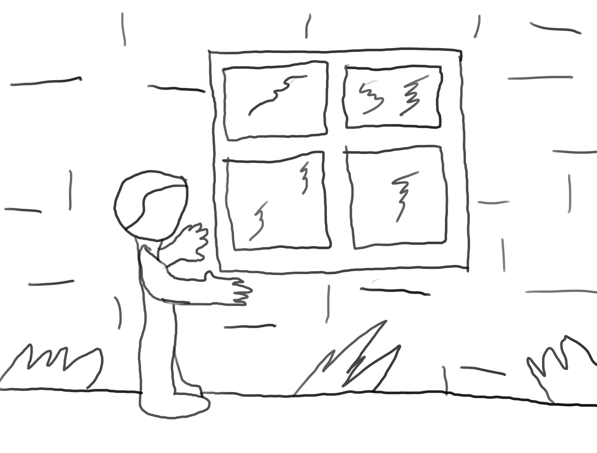
When the chaos of the attempted robbery was over, David followed the mage who dealt with the robber. He found himself in front of a simple townhouse and snuck around trying to observe the man. The man had a wife and a pet dog and, by his office, was a freelance writer. A couple of days later, David was still looking in the house daydreaming about being a part of that family. And the man caught him. David thought that the man was going to beat him, send him to the police or just incinerate him for snooping around. Instead, the man smiled and invited him into the house. David accepted and after talking with both the man and his wife, was allowed to live with them.
The next five years for him would be the best in his life. But it would not last. The house was attacked by a Black Cult. The father tried to defend his family, but ultimately paid the ultimate price. The mother was killed soon after along with the dog. Yet, before she died, she had hid David away with a knife.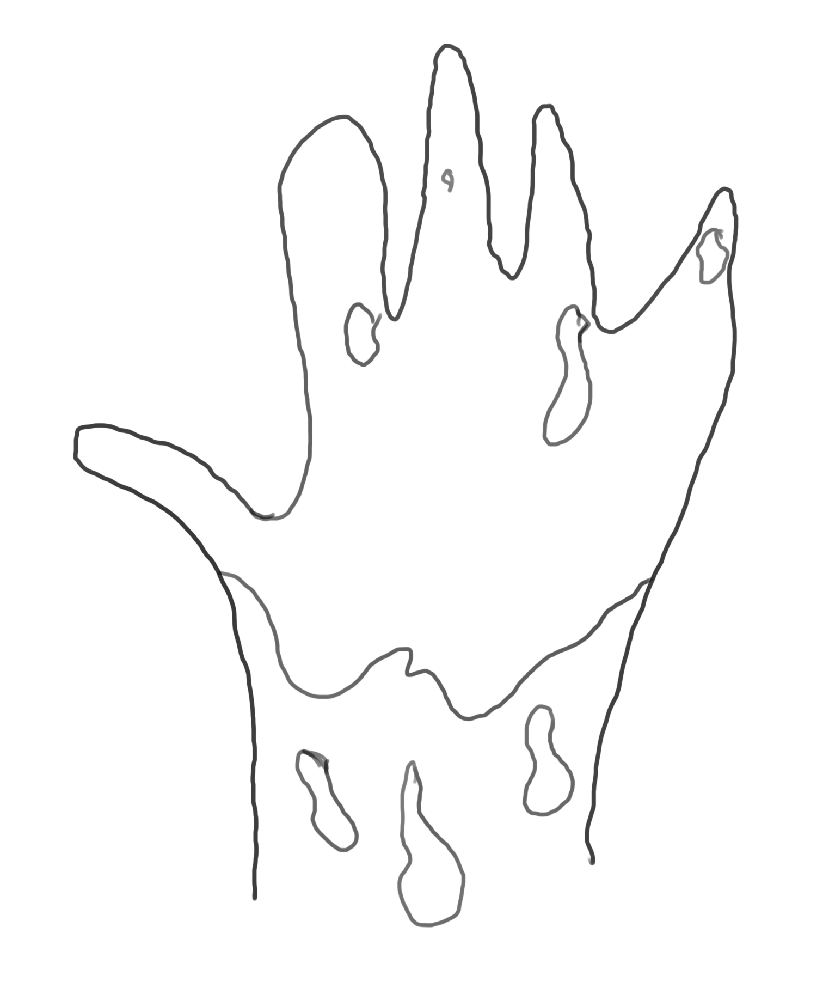 When the others of the house were dead, there was only one cultist left. The cultist searched for David, but did not find him. Filled with rage, David attacked and killed the last cultist. With the blood of the cultist and his adoptive family on his hands, he hid in the house instead of fleeing.
Days later, an Inquisition team was sent to the house to investigate and they found David. They brought him in and stayed at the base. He eventually became a Inquisitor and was a very successful one too. At the start of Hunted, he has six successful missions under his belt and all of them were solo missions.
Various Lines: "Did you really think that would go bad?", "Why did you expect anything else?"
Design Notes: David is a long ranged fighter who specializes in sniping. In this way, he needs Dexterity to increase his accuracy. After that, he can use Strength to make sure he can hold stronger rifles and Wisdom to help increase his accuracy and Perception. He can use Constitution to increase his health but it is not as important. Magic and Charisma are not needed at all and do not provide any use.
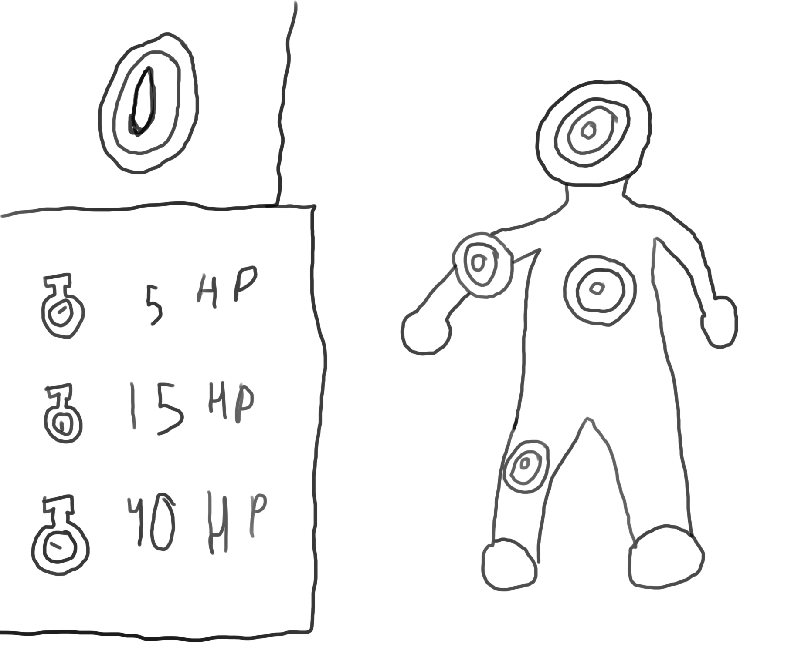
David has a base class of "Sniper." This class has a talent tree that focuses on his sniping abilities such as increasing his range with sniper rifles and giving him skills such as "Penetrating Bullet" (the ability to shoot through a target into another target) and "Ricochet" (the ability to shoot a wall or barrier and have it bounce into a target). At a certain level, the player then can choose one of three "specialized classes."
The "Bloodless" specialized class focuses on furthering David's sniper abilities. It will give him passive effects that further increase his sniper's range and damage and skills such as "Aimed Shot" (the ability to increase damage based on how long the player holds the ability) and "Disabling Shot" (the ability to choose an area of the body and give the enemy a debuff depending on the area hit).
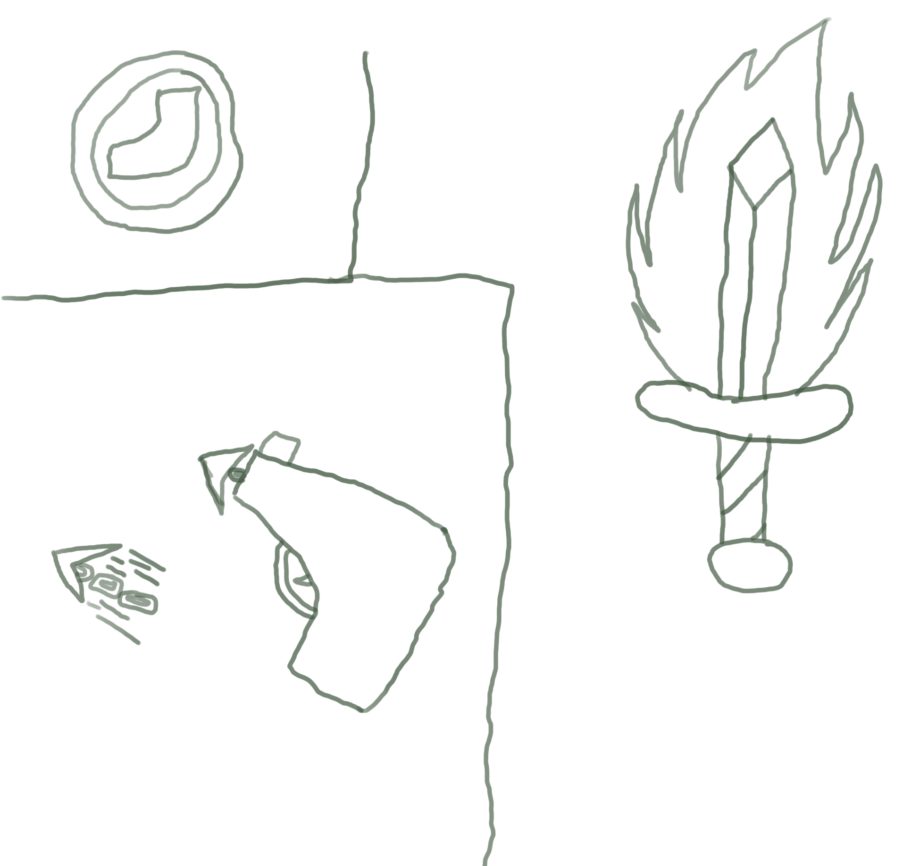
The "Mobility" class focuses on the flexibility that multiple artifices can provide. He gains the use of equipment like the "Chain Hook" (a grappling hook that automatically retracts giving the player more mobility) and a "Flare Blade" (a dagger that is covered in fire giving the player more close range fighting capability). Passive effects help power up these devices to give the player more flexibility in battle.
The "Fearless" class takes David into the middle of combat. This class focuses on increasing his close range combat capability with weapons such as SMGs and Semi-Automatic Pistols. Passive abilities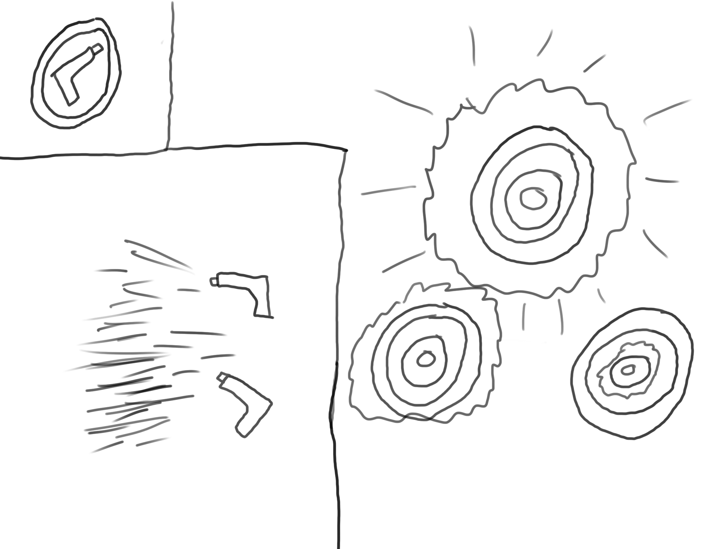 increase accuracy and rate of fire for these mid-range weapons. The skills for this class include "Spray and Pray" (an ability that sacrifices accuracy for power for a few seconds) and "Hammer It Home" (an ability that increases single target damage for a few seconds).